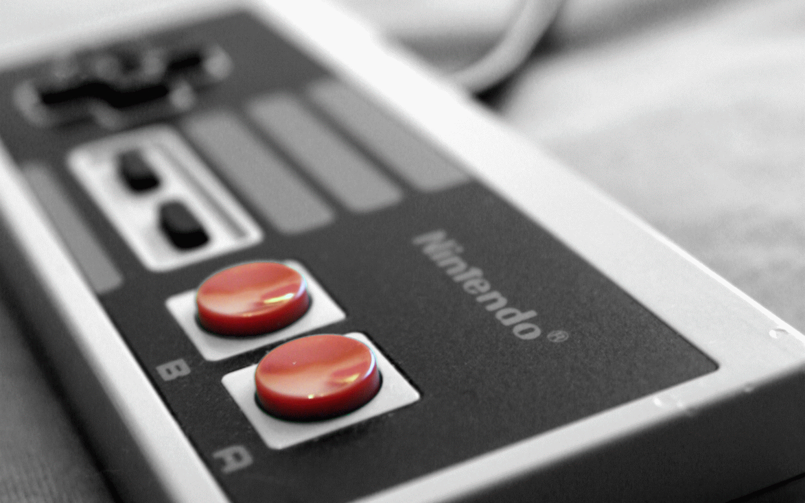
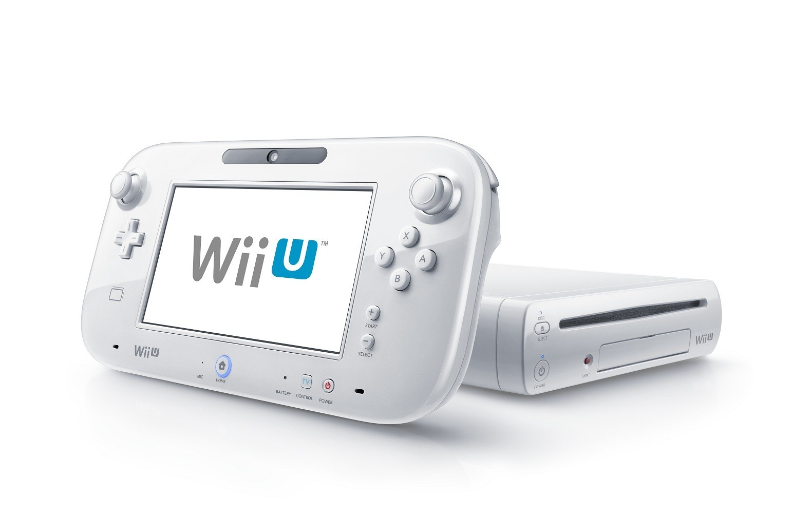
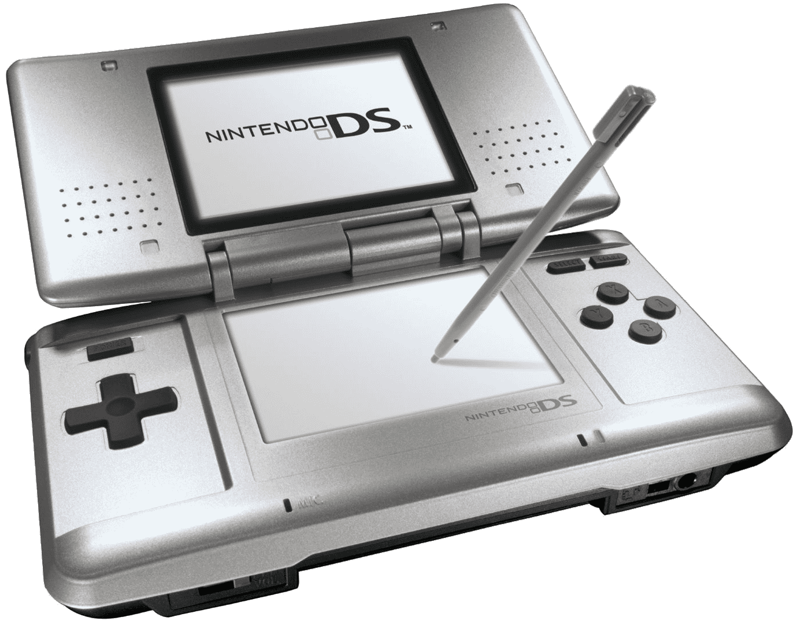

FC游戏机，是任天堂生产、发行和销售的8位第三世代家用游戏机，日本版官方名称为家庭电脑（日版名：ファミリーコンピュータ，Family Computer，Famicom），俗称"红白机"，1983年7月15日在日本推出；欧美版名称为任天堂娱乐系统（英文版名：Nintendo Entertainment System，NES），俗称"灰机"，1985年10月18日在美国推出。欧美版主机外型和使用的游戏盒带（卡带），与日本版的红白机完全不同。红白机是当时最畅销的游戏机，全球累计销量超过了6100万台。FC游戏机出现对电子游戏产生了十分深远的影响，让美国电子游戏界从1983年的崩溃中恢复过来，也奠定了任天堂在当今游戏界的地位。其后续机种为1990年推出的超级任天堂。
 超级任天堂，简称超任，是任天堂公司开发的家用游戏机。英文名称Super Famicom，简写SFC；在欧美洲销售的产品名为Super Nintendo Entertainment System，简写SNES。超级任天堂是任天堂红白机的后继机种。 超级任天堂，简称超任，是任天堂公司开发的家用游戏机。英文名称Super Famicom，简写SFC；在欧美洲销售的产品名为Super Nintendo Entertainment System，简写SNES。超级任天堂是任天堂红白机的后继机种。
超级任天堂1990年11月21日在日本开始发售，北美于1991年8月13日发售，欧洲于1992年4月11日发售。
手柄首次加入肩部按键L/R，并形成了ABXY四个按键的手柄布局。
超级任天堂全球累计销量4910万台。
 任天堂64（Nintendo 64，简称N64），是任天堂公司的第三代家用游戏机，是SFC的后续机种，是消费电子64位计算的先驱者。1996年6月23日在日本面世，而北美于1996年9月29日、欧洲和澳洲于1997年3月1日、法国于1997年公开发售。 任天堂64（Nintendo 64，简称N64），是任天堂公司的第三代家用游戏机，是SFC的后续机种，是消费电子64位计算的先驱者。1996年6月23日在日本面世，而北美于1996年9月29日、欧洲和澳洲于1997年3月1日、法国于1997年公开发售。
N64手柄堪称游戏史上最重要的输入设备，它有3个堪称划时代的设计：类比摇杆，扳机按键，震动包。N64上诞生了塞尔达传说：时之笛和超级马力欧64等超级大作。N64下一代产品为任天堂NGC。
 NGC，Nintendo GameCube（日本及其他亚洲地区缩写为GC或NGC）是任天堂公司的第四代家用游戏机。是N64的后续机种。开发时的内部代号为"Dolphin"。主机创新之处是2002年任天堂发布的NGC的无线手柄，2002年E3展上的最佳外设奖WaveBird。 NGC，Nintendo GameCube（日本及其他亚洲地区缩写为GC或NGC）是任天堂公司的第四代家用游戏机。是N64的后续机种。开发时的内部代号为"Dolphin"。主机创新之处是2002年任天堂发布的NGC的无线手柄，2002年E3展上的最佳外设奖WaveBird。
销售量方面，全世界总计为2174万部。2006年11月，任天堂推出了NGC的下一代产品Wii。
 Game Boy家系是任天堂发售的掌上游戏机家系。全球累计销量超过2亿。初代Game Boy全球销量1.1869亿。Game Boy Advance合计销量8151万。全部Game Boy系统累计全球销量2.0020亿。 Game Boy家系是任天堂发售的掌上游戏机家系。全球累计销量超过2亿。初代Game Boy全球销量1.1869亿。Game Boy Advance合计销量8151万。全部Game Boy系统累计全球销量2.0020亿。
通过任天堂3DS Virtual Console可玩到Game Boy家系游戏。
任天堂为将任天堂DS推给更广泛的用户，在2005年停产了Game Boy品牌。有认为任天堂DS家族或任天堂3DS家族是Game Boy家系的一部分。
 GAME BOY ADVANCE，简称GBA。是任天堂公司于2001年3月21日发售的第二代便携式游戏机，最大特点是采用了彩色的TFT液晶屏幕。售价9800日元，可向下兼容上一代的的Game Boy的游戏。2004年6月，神游推出小神游GBA，2005年小神游销量逾20万台，公司营业额破亿。 GAME BOY ADVANCE，简称GBA。是任天堂公司于2001年3月21日发售的第二代便携式游戏机，最大特点是采用了彩色的TFT液晶屏幕。售价9800日元，可向下兼容上一代的的Game Boy的游戏。2004年6月，神游推出小神游GBA，2005年小神游销量逾20万台，公司营业额破亿。
GBA有两个改版机型，分别是2003年上市的GBA SP，和2005年上市的GBM。 截止到2010年，GBA总全球累计售出8151万部。任天堂的下一代掌机为任天堂DS。
 Wii是任天堂公司2006年11月19日推出的家用游戏机。是NGC的后续机种。Wii第一次将体感引入了电视游戏主机。开发代号为 "Revolution"（革命），表示电子游戏的革命。通过体感概念和家庭娱乐模式，发售第一年销量达2000万台。截止2018年12月，Wii全球累计销量1亿零163万台，游戏9亿2千零66万份。 Wii是任天堂公司2006年11月19日推出的家用游戏机。是NGC的后续机种。Wii第一次将体感引入了电视游戏主机。开发代号为 "Revolution"（革命），表示电子游戏的革命。通过体感概念和家庭娱乐模式，发售第一年销量达2000万台。截止2018年12月，Wii全球累计销量1亿零163万台，游戏9亿2千零66万份。
Wii和NDS的成功使得它们在游戏业界风光一时。任天堂成为了商业教科书竞相引用的成功案例。2008年是电子游戏产业的一个分水岭，任天堂在那一年达到了顶峰，股票市值峰值约880亿美元（当时相当于索尼集团4倍多）。
2011年6月8日，任天堂在E3游戏展上推出搭配触控屏手柄的新一代Wii U游戏机。已在美国2012年11月18日发售。
Wii U是任天堂新推出的HD家用游戏机，是Wii的后继机种。2011年6月7日公布，2012年12月8日上市。WiiU可以向下兼容Wii所有游戏。新机支持1080P的高清输出，拥有全新触摸屏手柄，可在家中任意地点进行游戏。
截止2015年12月底的统计，全世界Wii U销量已达1401万台，软硬件比率高达6:1。Wii U是时代杂志2012年十大科技产品之一，是福布斯2014年度最佳电视游戏主机，任天堂诸多世界级大作的平台，免费且稳定的网络环境、相比之下更高的平均游戏素质，这些都是WiiU明显有别与其他家用机的优点。
全新游戏机任天堂Switch已经亮相，集电视游戏与掌上游戏"双机一体"，已于2017年三月发售，业内估计发布之后 年销量将超千万台。
2022年7月19日，IT之家消息，任天堂Wii U确认2023年3月28日上午9点后在线商店不支持购买游戏、新增内容和内购内容。
nds是电玩游戏生产商任天堂公司2004年发售的第三代便携式游戏机。主要的特征包括了双屏幕显示，其中下方的屏幕为触摸屏；并配置有麦克风声音输入装置和 Wi-Fi 无线网络功能。
任天堂DS推出过三款改良机型，依时间顺序分别为任天堂DS Lite、任天堂DSi、任天堂DSi LL。截至2012年，DS的全球总销量已经达到1.5369亿部，历史排名第一。国行神游DS销量超过30万台，销售额逾4亿元。任天堂DS的下一代掌机为任天堂3DS。
Wii和NDS的空前成功在游戏业界风光一时无两。任天堂成为了商业教科书竞相引用的成功案例。2008年是电子游戏产业的一个分水岭，任天堂在那一年达到了名利双收的顶峰，股票市值峰值约880亿美元（当时相当于索尼集团4倍多）。
 任天堂3DS（ 日文：ニンテンドー3DS；英文：Nintendo 3DS），是日本任天堂公司于2011年推出的第四代便携式游戏机，属任天堂DS后续机种，2011年2月26日在日本上市。利用视差障壁技术，让玩家无需配戴特殊眼镜即可感受到裸眼3D图像。该平台向下兼容任天堂DS软件。2012年9月发行繁体中文版3DS。2012年11月发行简体中文版3DS。 任天堂3DS（ 日文：ニンテンドー3DS；英文：Nintendo 3DS），是日本任天堂公司于2011年推出的第四代便携式游戏机，属任天堂DS后续机种，2011年2月26日在日本上市。利用视差障壁技术，让玩家无需配戴特殊眼镜即可感受到裸眼3D图像。该平台向下兼容任天堂DS软件。2012年9月发行繁体中文版3DS。2012年11月发行简体中文版3DS。
2020年，任天堂3DS有四个衍生机型，分别是2012年上市的大屏幕任天堂3DS LL；2014年10月起发售的新3DS与新任天堂3DS LL/XL。2015年1月26日为止，任天堂3DS日本国内销量已突破1900万台。
主机累计销量 3DS：主机7594万台，游戏3亿8648万份。
2021年3月8日，任天堂官方表示，因为3DS系列掌机相关的维修配件已经全部消耗完，即日起将终止3DS和3DSLL掌机的维修，同时向玩家表达了歉意。
2022年7月19日，IT之家消息，任天堂3DS确认2023年3月28日上午9点后在线商店不支持购买游戏、新增内容和内购内容。
 Nintendo Switch是任天堂于2017年1月13日发布的游戏机。 Nintendo Switch是任天堂于2017年1月13日发布的游戏机。
Nintendo Switch正面搭载了一块分辨率为720P的6.2英寸LCD屏幕；具有电光蓝·电光红和灰色2种颜色；机身长度102毫米，宽度239毫米，厚度13.9毫米，重量约398克。
Nintendo Switch主机内存为32GB，可以使用microSD卡来进一步扩充内存容量；采用立体声扬声器，支持加速度感应器、陀螺仪感应器和亮度感应器；Nintendo Switch主机内置4310毫安时可充锂电池，Joy-Con内置525毫安时可充锂电池。
 Nintendo Switch Lite是任天堂于2019年7月10日发布的游戏机。 Nintendo Switch Lite是任天堂于2019年7月10日发布的游戏机。
Nintendo Switch Lite正面搭载了一块分辨率为720P的5.5英寸LCD屏幕；具有黄色、灰色、蓝绿色、珊瑚色和蓝色5种颜色；机身长度91.1毫米，宽度208毫米，厚度13.9毫米，重量约275克。
Nintendo Switch Lite内存容量为32GB，不支持Nintendo Switch基座，不支持电视模式和桌面模式，可游玩所有支持掌上模式的Nintendo Switch游戏；不支持有线网络插孔、Labo VR眼镜、无线麦克风，配备39瓦充电器，电池的可持续时间增加到约3.0-7.0小时；支持无线连接Switch Pro手柄和Joy-Con手柄，可以通过Nintendo Switch Lite游玩仅能使用Joy-Con手柄进行操作的游戏。
|